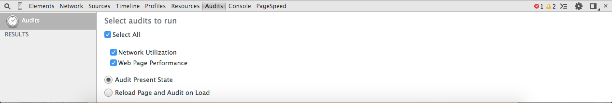
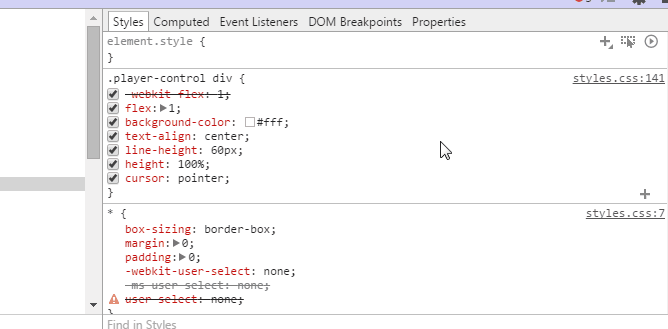

A JOURNEY THROUGH CHROME DEVTOOLS
Chrome DevTools
What?, Why?, How?
What?
A set of tools allowing developers and programmers deep access into the internal of the browser and authoring and debugging web applications. The Developer Tools are part of the open source Webkit project. (what's webkit project)
Why?
It will make you a productive developer. As a web developer or programmar you will gain a lot of facilities from knowing/using DevTools, you will be able to find the bugs quickly and know how to keep your Apps efficient and running as fast as possible.
How?
Just install Google Chrome browser. Congrats, No more downloads/effort.
You've three ways to open it:-
- shift+ctrl+i
- Right-click > Inspect Element
- View > Developer > Developer Tools
- etc ..
Jounrey program
you are gonna learn about:-
- Dive into the hight-level structure of the browers
- Use Tools
- Have a look at some cool DevTools features
- Performance and profiling
Chrome Canary version
It has the newest of Chrome features. It changes and gets new features almost every day. Designed for developers and early adopters and can be prone to breakage!.
Dive into the hight-level structure of the browers
what happens when you type "google.com" in the address bar untill you see the google page
After a request got fired and a response got recieved ...
Browser hight-level structure
- The user interface: includes every part of the browser except the main window where you see the requested page.
- The browser engine: the interface for querying and manipulating the rendering engine.
- The rendering engine: requesting for displaying/parsing the requested content, Ex:- if the requested content is HTML, it is responsible for parsing HTML and CSS and displaying the parsed content in the screen
- Networking: responsible for networks calls, like HTTP requests
- UI backend: used for drawing basic widgets like combo boxes and windows. Underneath it uses the operating system user interface methods.
- JavaScript interpreter: Used to parse and execute the JavaScript code.
- Data storage: This is a persistence layer. The browser needs to save all sorts of data on the hard disk, for examples, cookies.

Note: Unlike most browsers,Chrome holds multiple instances of the rendering engine - one for each tab. Each tab is a separate process.
Rendering Engine
When a response delivered to the browser through the network layer, it starts its tour through the render engine.
- Parse HTML to construct DOM nodes (content tree) (What's DOM?)
- Parse external CSS and in style elements + html to traverse to Render tree
- Render tree contains elements as rectangles in right order to be displayed.
- Goes through layout processing, giving the element the real coordinates where it should appear on the screen.
- Then it will go through painting whereas each node will be painted using the UI backend layer.


Use Tools
Overall, there are eight main groups of tools available via Developer Tools.
Elements, Networks, Sources, Timeline, Profiles, Resources, Audits and Console.
Note: may be you see different tools as tools get changed during versions, but not significant change.
The Elements tool:
Allows you to see the web page as the browser sees it. That is, using the Elements tool, you can see the raw HTML, raw CSS styles, the Document Object Model, and manipulate either in real time.

The Networks tool:
Use the Resources tool to learn what components your web page or application is requesting from web servers, how long these requests take, and how much bandwidth is required. You can also view the HTTP request and response headers for each of your resources. The Resources tool is perfect for helping you speed up page load times.

The Sources tool:
To peer inside the JavaScript for a page, you will use the Scripts tool. Here you can find a list of scripts required by the page plus a full featured script debugger. You can even change the JavaScript on the fly!

The Profiles tool:
The Profiles tool helps you capture and analyze the performance of JavaScript scripts. For example, you can learn which functions take the most time to execute and zero in on exactly where to optimize.

The Resources tool:
Modern web applications require more persistence than simply cookies, and the Resources tool helps you track, query, and debug local browser storage. This tool can display and query data stored in local databases, local storage, session storage, and cookies.
The Audit tool:
The Audit tool is like having your own web optimization consultant sitting next to you. This tool can analyze a page as it loads and provide suggestions and optimizations for decreasing page load time and increase perceived (and real) responsiveness.

The Console tool:
Last but definitely not least, the Developer Tools offers a full featured Console. From the Console, you can interact with your app's views and scripts , run javascript commands and view log output.

Have a look at some cool DevTools features
tips and tricks
Quick file switching
Ctrl + P (Cmd + P on Mac)

Search within source code
Ctrl + Shift + F (Cmd + Opt + F)

Go to line
Ctrl + G for Windows and Linux, (or Cmd + L for Mac)
or Ctrl+p+:
Selecting elements in console
$0 – $4 – A history of the five most recent DOM elements that you’ve selected in the elements panel, $0 being the latest.

Use multiple carets & selections
Hold Ctrl (Cmd for Mac) and click where you want them to be

Preserve Log
persist the log instead of clearing it on every page load.

Pretty Print {}
return minimized code to its humanly readable format.

version control

Device mode
Device emulation sensors
Color Picker

Force element state
Visualize the shadow DOM

Select next occurrence
Ctrl + D (Cmd + D)
Change color format
Shift + Click on the color preview

Editing local files through workspaces
Workspaces are a powerful Chrome DevTools feature, which turns it into a real IDE. Workspaces match the files in the Sources tab to your local project files, so now you can edit and save directly, without having to copy/paste your changes into an external text editor.
Timeline and profiles
Being aware of how to measure and improve performance can be a useful skill and in this short post, I'll give you a quick refresher on how this can be done with the Chrome DevTools Timeline and Profiles.
Timeline
The Timeline panel provides an overview of where time is spent loading up your web application such as how long it takes to process DOM events , render page layouts or paint elements to the screen . it allows you to track frames per second and each frame what work was involved.
Summary view
displays horizontal bars representing
- HTML parsing (blue)
- JavaScript (yellow),
- Style recalculation and layout (purple)
- Painting and compositing (green)
Details view
Includes detailed records for these categories after a session has been recorded.
- Name: The name of the function.
- Self Time: How long it took to complete the current invocation of the function, including only the statements in the function itself, not including any functions that it called.
- Total Time: The time it took to complete the current invocation of this function and any functions that it called.

Frame rate: Consider it as the number of images that get rendered on your screen per second.
Frames view: Tells you when and where your frame rate is starting to saffer.
CPU profiler Shows us which part of our JS are slowing the page down
Lets see it in action ;)
Tool used for creating the presentation
https://github.com/markdalgleish/bespoke.js
resources
- http://taligarsiel.com/Projects/howbrowserswork1.htm
- http://www.html5rocks.com/en/tutorials/developertools/part1/
- http://tutorialzine.com/2015/03/15-must-know-chrome-devtools-tips-tricks/
- http://addyosmani.com/blog/performance-optimisation-with-timeline-profiles/
- http://webcomponents.org/articles/introduction-to-shadow-dom/
- http://paullewis.github.io/udacity-sample/
- https://developer.chrome.com/devtools
- RECOMMENDED http://discover-devtools.codeschool.com
- RECOMMENDEDhttps://www.udacity.com/course/viewer#!/c-ud884